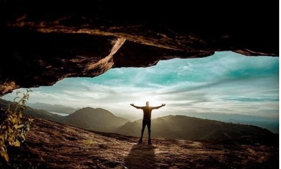
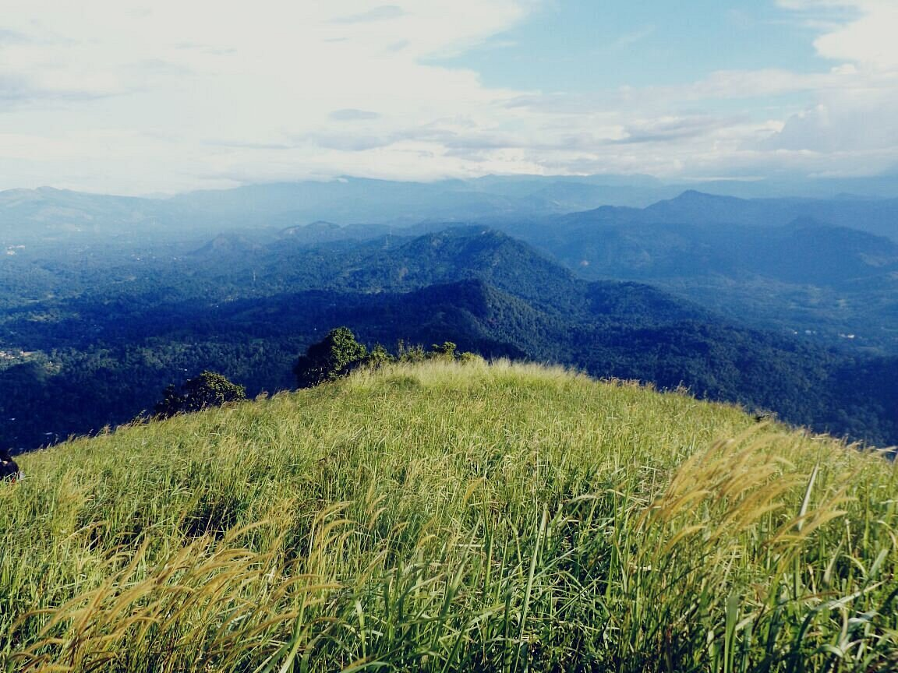
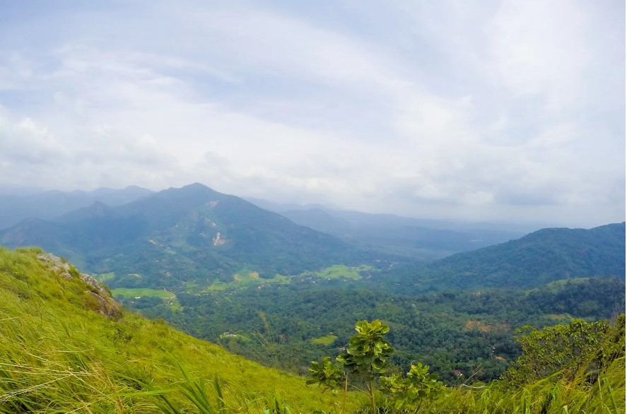

Escape to nature's embrace in Sri Lanka, where camping transforms into an adventure of discovery. Amidst lush jungles, pristine beaches, and misty mountains, immerse yourself in the rhythm of the wild. Experience the thrill of wildlife encounters, the serenity of starlit nights, and the warmth of campfire tales. Sri Lanka invites you to embark on a journey where every moment sparks a sense of wonder and awe
Best Places for Camping!
Nuwaragala Mountain
Nuwaragala is an ancient fortress and monastery which is situated along the Mahiyangane-Dimbulagala-Dalukkane Highway in Ampara. A paved pathway made of stone leads to the top of the mountain and to a large cave, which can easily house about 150 persons.

Alagalla Mountain Range
Alagalla Mountain Range is situated at the boundaries of the Central and Sabaragamuwa Provinces in Sri Lanka. Along with the surrounding Bathalegala also known as Bible Rock, Uthuwankanda , Devanagala , Ambuluwawa, Knuckles Mountain Range and Hanthana Mountain Range, Alagalla mountain has served as a natural defense location for nearly five centuries (1505�1948) against the Portuguese, Dutch and English invasions aimed at the Kandyan Kingdom.

Bathalegala (Bible Rock)
Bible rock / Punchi Sigiriya / Bathalegala is a mountain range with a height of 2780 feet above sea level, located in Kegalle Aranayaka area. It is popular among tourists due to its easy climbing and natural beauty of the ecosystem.
When you reach the top, you will be able to see a large area spread over Uthuankanda, Alagalla, Urakanda, Ambuluawa, Samasara Kanda as well as Kegalle, Mawanella, Gampala, Kadugannawa areas.
Bathalegala is a suitable place for night camping ,and it is customary to get permission from the temple.

JUST KEEP IN MIND!
Prioritise your safety above all else, and research the reputation of the rafting tour operators before selecting one. It is recommended that you do not embark on the more dangerous waters before you’ve accumulated prior experience navigating canyons and rafts. Make sure to wear comfortable clothing that is quickly drying when on your journey, and the equipment provided by the guides are a must.